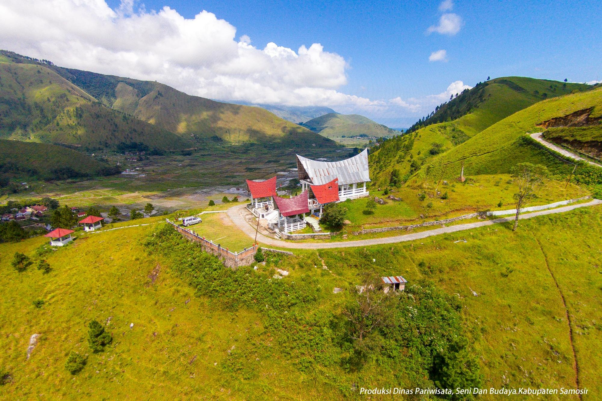

01
Pulau Samosir
Pulau di tengah Danau Toba yang kaya akan sejarah dan budaya Batak.

Pulau di tengah Danau Toba yang kaya akan sejarah dan budaya Batak.

Perbukitan hijau dengan panorama Danau Toba yang luas.

Air terjun dengan suasana sejuk dan alami di kawasan Sianjur Mulamula.